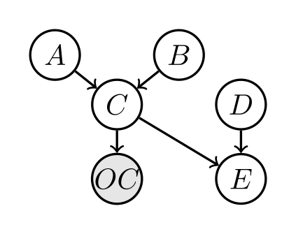

ABCDE example¶
This example demonstrates how TBN performs inference on a Bayesian network that combines discrete and continuous variables, using tensorised Monte Carlo sampling and adaptive MCMC.
The example is intentionally minimal, but it exercises the full workflow: model definition, evidence conditioning, scalable inference, and posterior analysis.
Model structure¶
The Bayesian network consists of six variables:
A: discrete, two states
B: discrete, three states
C: continuous, conditioned on (A, B)
OC: continuous observation of C
D: binary
E: continuous, deterministic function of (C, D)
The BN graph is:
{kind=link}
OC is shaded as an observed variable.
Task¶
Given multiple noisy observations of OC, the task is to infer the posterior distributions of A, B, and C, i.e. \(p(A, B, C \mid OC=\text{evidence})\).
Step 0: Define custom variables and probability distributions¶
A, B, and D are discrete, tractable (i.e. small state-space) variables, so they use built-in CPT classes.
C, OC, and E are continuous (or non-tabular) variables, requiring custom probability models:
C | A, B: Gaussian distribution with mean and variance depending on the discrete parents (A, B):
1import torch 2from torch.distributions import Normal 3 4class C: 5 def __init__(self, childs, parents, sigma=0.6, device="cpu"): 6 """ 7 C | A,B ~ Normal(A + B, sigma^2) 8 9 childs : [Variable C] 10 parents : [Variable A, Variable B] 11 sigma : fixed noise std (float) 12 """ 13 self.childs = childs 14 self.parents = parents 15 self.device = device 16 17 self.sigma = float(sigma) 18 19 # parent variables 20 self.A = parents[0] 21 self.B = parents[1] 22 23 # value lookup tables 24 self.A_values = torch.tensor( 25 self.A.values, dtype=torch.float32, device=device 26 ) 27 self.B_values = torch.tensor( 28 self.B.values, dtype=torch.float32, device=device 29 ) 30 31 # ------------------------------------------------------------------ 32 def sample(self, Cs_pars): 33 """ 34 Cs_pars : (N, 2) 35 Cs_pars[:,0] = A index 36 Cs_pars[:,1] = B index 37 38 Returns 39 ------- 40 Cs : (N,) sampled C values 41 logp : (N,) log p(C | A,B) 42 """ 43 Cs_pars = Cs_pars.to(self.device).long() 44 45 A_idx = Cs_pars[:, 0] 46 B_idx = Cs_pars[:, 1] 47 48 mean = self.A_values[A_idx] + self.B_values[B_idx] 49 std = torch.full_like(mean, self.sigma) 50 51 dist = Normal(mean, std) 52 Cs = dist.sample() 53 logp = dist.log_prob(Cs) 54 55 return Cs, logp 56 57 # ------------------------------------------------------------------ 58 def log_prob(self, Cs): 59 """ 60 Cs : (N, 3) 61 Cs[:,0] = C value 62 Cs[:,1] = A index 63 Cs[:,2] = B index 64 65 Returns 66 ------- 67 log p(C | A,B) : (N,) 68 """ 69 Cs = Cs.to(self.device) 70 71 C_val = Cs[:, 0] 72 A_idx = Cs[:, 1].long() 73 B_idx = Cs[:, 2].long() 74 75 mean = self.A_values[A_idx] + self.B_values[B_idx] 76 std = torch.full_like(mean, self.sigma) 77 78 dist = Normal(mean, std) 79 return dist.log_prob(C_val)
OC | C: Noisy observation model with Gaussian noise:
1import torch 2from torch.distributions import Normal 3 4class OC: 5 def __init__(self, childs, parents, device='cpu'): 6 """ 7 childs: [OC variable] 8 parents: [C variable] 9 OC = C + Normal(0, 1) 10 """ 11 self.childs = childs 12 self.parents = parents 13 self.device = device 14 15 # standard deviation is fixed 16 self.std = torch.tensor(0.5, device=device) 17 18 # -------------------------------------------------------------- 19 def sample(self, Cs_pars): 20 """ 21 Cs_pars: tensor (N, 1) 22 Cs_pars[:,0] = C value 23 24 Returns: 25 OC samples of shape (N,) 26 """ 27 Cs_pars = Cs_pars.to(self.device) 28 C_val = Cs_pars[:, 0] 29 30 dist = Normal(C_val, self.std) 31 Cs = dist.rsample() # (N,) 32 ps = dist.log_prob(Cs) # (N,) 33 34 return Cs, ps 35 36 # -------------------------------------------------------------- 37 def log_prob(self, Cs): 38 """ 39 Cs: tensor (N, 2) 40 Cs[:,0] = observed OC value 41 Cs[:,1] = C value 42 43 Returns: 44 log p(OC | C), tensor shape (N,) 45 """ 46 Cs = Cs.to(self.device) 47 48 OC_val = Cs[:, 0] 49 C_val = Cs[:, 1] 50 51 dist = Normal(C_val, self.std) 52 return dist.log_prob(OC_val) # (N,)
E | C, D: Deterministic relation defined by a function:
1import torch 2 3class E: 4 def __init__(self, childs, parents, device='cpu'): 5 """ 6 childs: list [E] (unused but consistent with your structure) 7 parents: list [C, D] 8 C: continuous-valued parent (tensor-like values for samples) 9 D: binary parent (0 or 1) 10 """ 11 self.childs = childs 12 self.parents = parents 13 self.device = device 14 15 # ------------------------------------------------------------------ 16 def sample(self, Cs_pars): 17 """ 18 Cs_pars: (N, 2) 19 Cs_pars[:,0] = C value (float) 20 Cs_pars[:,1] = D index (0 or 1) 21 22 Returns: 23 E samples (N,) 24 """ 25 Cs_pars = Cs_pars.to(self.device) 26 27 C_val = Cs_pars[:, 0] 28 D_idx = Cs_pars[:, 1].long() 29 30 # E = C if D==0, else 0 31 Cs = torch.where(D_idx == 0, C_val, torch.zeros_like(C_val)) 32 33 # deterministic function, i.e. P(E | C, D) = 1 34 n_sample = Cs_pars.shape[0] 35 ps = torch.log(torch.ones(n_sample,)).to(self.device) 36 37 return Cs, ps 38 39 # ------------------------------------------------------------------ 40 def log_prob(self, Es): 41 """ 42 Es: shape (N, 3) 43 Es[:,0] = E value 44 Es[:,1] = C value 45 Es[:,2] = D state (0 or 1) 46 47 Returns: 48 log p(E | C, D) of shape (N,) 49 """ 50 51 Es = Es.to(self.device) 52 53 E_val = Es[:, 0] 54 C_val = Es[:, 1] 55 D_idx = Es[:, 2].long() 56 57 # Deterministic rule: valid_E = C if D==0 else 0 58 expected_E = torch.where(D_idx == 0, C_val, torch.zeros_like(C_val)) 59 60 # Valid if E_val == expected_E 61 is_valid = (E_val == expected_E) 62 63 # log 1 = 0 for valid, log 0 = -inf for invalid 64 logp = torch.where(is_valid, torch.zeros_like(E_val), torch.full_like(E_val, -float("inf"))) 65 66 return logp
Important notes¶
A custom probability model class should include (at minimum) the following methods:
__init__defines core properties such aschilds,parents, anddevice(cpuorgpu). Additional properties may be added as needed.samplegenerates samples of child variables conditioned on given samples of the parent nodes.Inputs:
selfandCs_pars, whereCs_parsis a tensor of shape(num_samples, num_parents)storing realisations of the parent variables.Returns: - (recommended) a tensor of child samples of shape
(num_samples, num_childs)- a tensor of log-probabilities of shape(num_samples,)for the generated samples
log_probcomputes the log-probability of given samples.Inputs:
selfandCs, whereCsis a tensor of shape(num_samples, num_childs + num_parents)storing realisations of both child (first) and parent (second) variables.Returns: a tensor of shape
(num_samples,)storing log-probabilities.
All methods should be compatible with both CPU and GPU tensors and should use PyTorch tensor operations for efficiency.
Step 1: defining variables and probability models¶
The file s1_define_model.py defines:
Variables (discrete vs. continuous)
Conditional probability objects for each node
In particular:
P(A) and P(B) are defined using categorical CPTs
P(C | A, B) follows a Gaussian model
P(OC | C) is a noisy observation model
P(E | C, D) is deterministic
This separation between variables and probability objects allows TBN to mix arbitrary discrete, continuous, and deterministic relations within a single network.
The full model definition is shown below.
1import os, sys
2BASE = os.path.dirname(os.path.abspath(__file__))
3sys.path.append(BASE)
4
5repo_root = os.path.abspath(os.path.join(BASE, "../.."))
6if repo_root not in sys.path:
7 sys.path.append(repo_root)
8
9from tbnpy import cpt, variable
10import numpy as np
11import torch
12
13import c, oc, e
14
15device = ('cuda' if os.environ.get('USE_CUDA', '0') == '1' else 'cpu')
16
17def define_variables():
18 varis = {}
19 varis['A'] = variable.Variable(name='A', values=[-0.3, 0.3])
20 varis['B'] = variable.Variable(name='B', values=[-0.2, 0.0, 0.2])
21 varis['C'] = variable.Variable(name='C', values=(-torch.inf, torch.inf)) # Continuous
22 varis['OC'] = variable.Variable(name='OC', values=(-torch.inf, torch.inf)) # Continuous
23 varis['D'] = variable.Variable(name='D', values=[0, 1]) # Binary
24 varis['E'] = variable.Variable(name='E', values=(-torch.inf, torch.inf)) # Continuous
25
26 return varis
27
28def define_probs(varis, device='cpu'):
29 probs = {}
30
31 #probs['A'] = cpt.Cpt(childs=[varis['A']], C=np.array([[0], [1]]), p=np.array([0.1, 0.9]), device=device)
32 probs['A'] = cpt.Cpt(childs=[varis['A']], C=np.array([[0], [1]]), p=np.array([0.5, 0.5]), device=device)
33 #probs['B'] = cpt.Cpt(childs=[varis['B']], C=np.array([[0], [1], [2]]), p=np.array([0.05, 0.15, 0.80]), device=device)
34 probs['B'] = cpt.Cpt(childs=[varis['B']], C=np.array([[0], [1], [2]]), p=np.array([0.3, 0.4, 0.3]), device=device)
35
36 probs['C'] = c.C(childs=[varis['C']], parents=[varis['A'], varis['B']], device=device)
37 probs['OC'] = oc.OC(childs=[varis['OC']], parents=[varis['C']], device=device)
38
39 probs['D'] = cpt.Cpt(childs=[varis['D']], C=np.array([[0], [1]]), p=np.array([0.4, 0.6]), device=device)
40
41 probs['E'] = e.E(childs=[varis['E']], parents=[varis['C'], varis['D']], device=device)
42
43 return probs
44
45if __name__ == '__main__':
46 varis = define_variables()
47 probs = define_probs(varis, device=device)
48
Step 2: evidence and scalable inference¶
The file s2_run_sample.py performs inference conditioned on evidence
for OC.
Key steps are:
Evidence definition Multiple observations of OC are generated and stored in a tabular format, allowing batched conditioning.
Forward sampling initialisation Initial MCMC chains are generated using forward sampling from the prior, improving stability and convergence.
Adaptive MCMC An adaptive Metropolis–Hastings sampler is used to infer the posterior of (A, B, C) given the evidence, i.e. P(A, B, C | OC=oc).
TBN evaluates many Monte Carlo samples simultaneously by reformulating inference computations as tensor operations. This enables efficient scaling across chains, evidence rows, and iterations.
import os, sys
from pathlib import Path
BASE = os.path.dirname(os.path.abspath(__file__))
RESULTS = Path(__file__).parent / "results"
sys.path.append(BASE)
repo_root = os.path.abspath(os.path.join(BASE, "../.."))
if repo_root not in sys.path:
sys.path.append(repo_root)
import torch
import numpy as np
import pandas as pd
import matplotlib.pyplot as plt
from tbnpy import inference, adaptiveMH
from s1_define_model import define_variables, define_probs
"""
Overall structure:
s2_run_sample.py
├─ define variables & probs (already done)
├─ define evidence
├─ forward sampling (initialisation)
├─ adaptive MH run
├─ posterior extraction
└─ plotting
"""
def define_evidence(n_evi=10, seed=123):
"""
Evidence DataFrame: shape (n_evi, n_evidence_vars)
OC ~ Normal(0, 0.15)
"""
rng = np.random.default_rng(seed)
evidence = pd.DataFrame({
"OC": rng.normal(loc=-0.3, scale=0.05, size=n_evi)
})
return evidence
def sample_prior(probs, variables, n_sample=5000):
"""
Sample prior for all variables using forward sampling.
Parameters
----------
probs : dict
BN probability objects
variables : dict or list
Variable objects
n_sample : int
Number of prior samples
Returns
-------
dict[var_name -> np.ndarray]
Each array has shape (n_sample,)
"""
# one dummy evidence row (no conditioning)
evidence = pd.DataFrame(index=[0])
# ensure variable list
if isinstance(variables, dict):
var_list = list(variables.values())
else:
var_list = list(variables)
query_nodes = [v.name for v in var_list]
probs_copy = inference.sample_evidence(
probs=probs,
query_nodes=query_nodes,
n_sample=n_sample,
evidence_df=evidence,
)
# container for prior samples
prior = {}
for prob in probs_copy.values():
Cs = prob.Cs # shape (1, n_sample, dim)
for j, child_var in enumerate(prob.childs):
name = child_var.name
prior[name] = Cs[0, :, j].detach().cpu().numpy()
return prior
def forward_initialise(probs, latent_vars, evidence, n_chain):
"""
Use forward sampling to initialise MCMC chains.
"""
probs_copy = inference.sample_evidence(
probs=probs,
query_nodes=[v.name for v in latent_vars],
n_sample=n_chain,
evidence_df=evidence,
)
return probs_copy
def run_mcmc(probs, varis, evidence, update_blocks, burnin=200, n_chain=5000, n_iter=2000, progress_every=100):
sampler = adaptiveMH.HybridAdaptiveMH(
probs=probs,
variables=list(varis.values()),
evidence_df=evidence,
n_chain=n_chain,
adapt=adaptiveMH.AdaptConfig(
burnin=burnin,
gamma=0.6,
target_accept=0.234,
alpha=0.5,
),
)
# --- Initialise from forward samples ---
probs_copy = forward_initialise(
probs,
sampler.latent_vars,
evidence,
n_chain,
)
sampler.init_state_from_forward_samples(probs_copy)
# --- Run MCMC ---
out = sampler.run(
n_iter=n_iter,
store_every=10, # thin
update_blocks=update_blocks,
progress_every=progress_every,
)
return sampler, out
def extract_posterior(sampler):
"""
Returns dict[var_name -> 1D np.ndarray]
(all evidence rows and chains flattened)
"""
posterior = {}
for v in sampler.latent_vars:
x = sampler.state[v.name] # (n_evi, n_chain)
posterior[v.name] = x.detach().cpu().numpy().reshape(-1)
return posterior
import numpy as np
import matplotlib.pyplot as plt
def plot_prior_vs_posterior(prior, posterior, var, bins=60, fname: str = None):
"""
Plot prior vs posterior for one variable.
Parameters
----------
prior : dict[str, np.ndarray]
Prior samples for all variables
posterior : dict[str, np.ndarray]
Posterior samples for all variables
var : Variable
tbnpy Variable object
bins : int
Number of bins for continuous histograms
fname : str, optional
File name to save the plot (saved in RESULTS folder). If None, the plot is not saved.
"""
name = var.name
if name not in prior:
raise KeyError(f"Variable '{name}' not found in prior samples.")
if name not in posterior:
raise KeyError(f"Variable '{name}' not found in posterior samples.")
x_prior = prior[name]
x_post = posterior[name]
plt.figure(figsize=(5, 4))
# Discrete variable
if isinstance(var.values, list):
K = len(var.values)
bins_disc = np.arange(K + 1) - 0.5
plt.hist(
x_prior,
bins=bins_disc,
density=True,
alpha=0.5,
label="Prior",
color="gray",
)
plt.hist(
x_post,
bins=bins_disc,
density=True,
alpha=0.6,
label="Posterior",
color="tab:blue",
)
plt.xticks(range(K), var.values)
plt.ylabel("Probability")
# Continuous variable
else:
plt.hist(
x_prior,
bins=bins,
density=True,
alpha=0.5,
label="Prior",
color="gray",
)
plt.hist(
x_post,
bins=bins,
density=True,
alpha=0.6,
label="Posterior",
color="tab:blue",
)
plt.ylabel("Density")
plt.xlabel(name)
plt.legend()
plt.tight_layout()
if fname is not None:
plt.savefig(RESULTS / fname, dpi=300)
if __name__ == "__main__":
device = "cuda" if os.environ.get("USE_CUDA", "0") == "1" else "cpu"
varis = define_variables()
probs = define_probs(varis, device=device)
n_evi = 20
evidence = define_evidence(n_evi=n_evi)
n_chain = 100
n_iter = 30_000
burnin = 200
query_varis = {v: varis[v] for v in ['A', 'B', 'C', 'OC']} # only infer OC's ancestors
query_probs = {k: v for k, v in probs.items() if any(c.name in query_varis for c in v.childs)}
update_blocks = ['A', 'B', 'C']
sampler, out = run_mcmc(
query_probs,
query_varis,
evidence,
update_blocks = update_blocks,
burnin=burnin,
n_chain=n_chain,
n_iter=n_iter,
progress_every = 100
)
prior = sample_prior(probs, varis, n_sample=10_000)
posterior = extract_posterior(sampler)
for _, v in query_varis.items():
if v.name in evidence.columns:
continue # skip evidence variables
plot_prior_vs_posterior(prior, posterior, v, fname=r"plot_" + v.name + f"_{n_evi}_evi_{burnin}_burnin_{n_chain}_chains_{n_iter}_iters" + ".png")
print("Acceptance rates:")
for k, v in out["accept_rate"].items():
print(f" {k}: {v:.3f}")
Prior vs posterior distributions¶
The prior and posterior distributions for variables A, B, and C illustrate how evidence propagates through both discrete and continuous parts of the network.
A: posterior probability shifts relative to the prior
B: moderate posterior update through indirect influence
C: posterior density becomes narrower
This demonstrates how noisy observations constrain latent variables.